Chapter 4. 데이터 모델링(Data Modeling)¶
1절. 데이터 모델링
2절. 데이터 모델
3절. 개체-관계 모델
4절. 논리적 데이터 모델
1절. 데이터 모델링¶
데이터 모델링(Data Modeling)¶
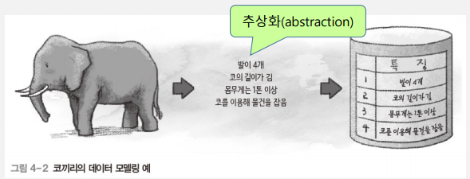
- 현실 세계에 존재하는 데이터를 컴퓨터 세계 데이터베이스로의 변환 과정
- 데이터베이스 설계 핵심 과정
2단계 데이터 모델링¶
| 종류 | 설명 |
|---|---|
| 개념적 데이터 모델링 (Conceptual Modeling) |
현실 세계 중요 데이터를 추출하여 개념 세계로 옮기는 작업 |
| 논리적 데이터 모델링 (Logical Modeling) |
개념 세계 데이터를 데이터베이스에 저장하는 구조로의 표현 작업 |
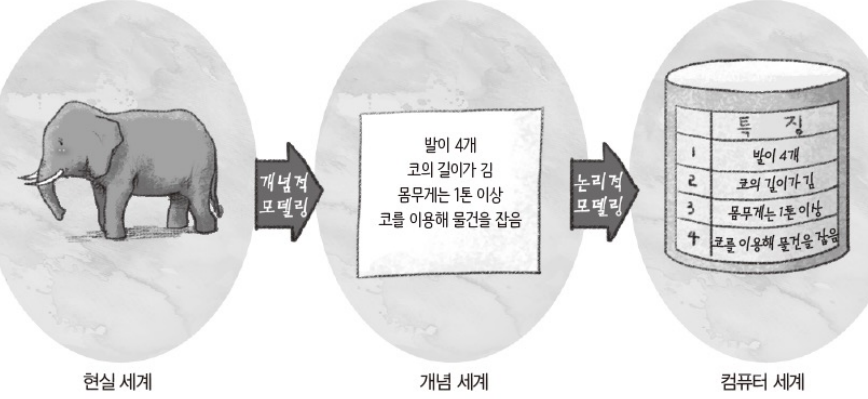
데이터 모델링 개념¶
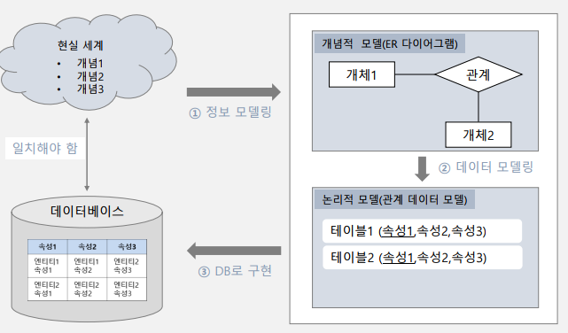
2절. 데이터 모델¶
데이터 모델(Data Model)¶
- 데이터 모델링 결과물 표현 도구
| 종류 | 설명 | 예시 |
|---|---|---|
| 개념적 데이터 모델 |
사람이 이해하도록 현실 세계를 개념적 모델링하여 데이터베이스 개념적 구조로 표현하는 도구 | 개체-관계 모델 |
| 논리적 데이터 모델 |
개념적 구조를 논리적 모델링하여 데이터베이스의 논리적 구조로 표현하는 도구 | 관계 데이터 모델 |
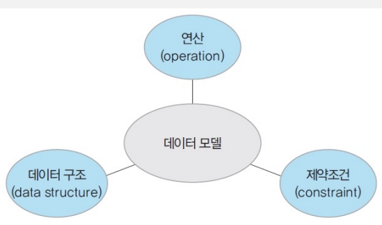
3절. 개체-관계 모델¶
개체-관계 모델(E-R model : Entity-Relationship model)¶
- 피터 첸(Peter Chen)의 개념적 데이터 모델
- 개체와 개체 간 관계로 현실 세계를 개념적 구조로 표현
- 핵심 요소 : 개체 · 속성 · 관계
개체-관계 다이어그램(E-R diagram)¶
- E-R 다이어그램
- 개체-관계 모델을 통해 현실 세계를 개념적으로 모델링한 결과물을 그림 표현
개체(Entity)¶
- 현실 세계에서 조직 운영에 꼭 필요한 사람 · 사물처럼 구별되는 모든 것
- 중요 데이터를 가진 사람· 사물 · 개념 · 사건 등
- 다른 개체와 구별되는 이름 보유
- 각 개체만의 고유한 특성 · 상태
- 모든 개체는 속성을 최소한 하나 이상 보유
- 파일 구조 레코드(record)와 대응
- 개체 예시
| 설명 | 개체 |
|---|---|
| 서점에 필요한 개체 | 고객 · 책 |
| 학교에 필요한 개체 | 학과 · 과목 |
- E-R 다이어그램 : 사각형 표현
- 사각형 안에 이름 표기
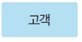
개체 세부 사항¶
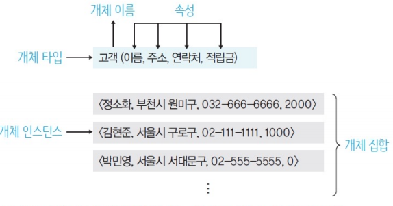
개체 타입(Entity Type)¶
- 개체를 고유 이름 · 속성들로 정의
- 파일 구조의 레코드 타입(record type)에 대응
개체 인스턴스(Entity Instance)¶
- 개체 구성 속성이 실제 값을 가짐으로써 실체화된 개체
- == 개체 어커런스(entity occurrence)
- 파일 구조 레코드 인스턴스(record instance)에 대응
개체 집합(Entity Set)¶
- 특정 개체 타입 개체 인스턴스들의 집합
속성(Attribute)¶
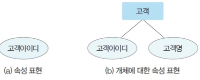
- 개체 · 관계가 가지는 고유 특성
- 의미 있는 데이터의 가장 작은 논리적 단위
- 파일 구조 필드(field)에 대응
- E-R 다이어그램 : 타원 표현
- 타원 안에 이름 표기
속성 분류¶
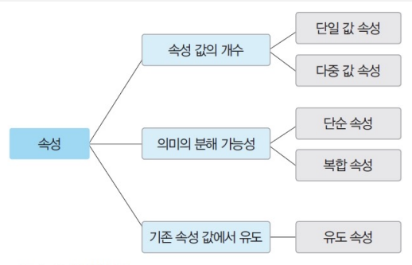
단일 값 속성(Single-Valued Attribute)¶
- 하나의 값만 가지는 속성
| 예시 |
|---|
| 고객 개체 이름 |
| 적립금 속성 |
다중 값 속성(Multi-Valued Attribute)¶
- 여러 개의 값을 가지는 속성
- E-R 다이어그램에서 이중 타원 표현
| 예시 |
|---|
| 고객 개체 연락처 속성 |
| 책 개체 저자 속성 |
단일 값과 다중 값 속성¶
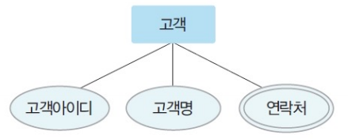
단순 속성(simple attribute)¶
- 의미를 더 분해할 수 없는 속성
| 예시 |
|---|
| 고객 개체 적립금 속성 |
| 책 개체의 이름 |
| ISBN |
| 가격 속성 |
복합 속성(composite attribute)¶
- 의미를 분해할 수 있는 속성
| 예시 |
|---|
| 고객 개체 주소 속성 : 도 · 시 · 동 · 우편번호 등으로 의미 세분화 |
| 고객 개체 생년월일 속성 : 연 · 월 · 일로 의미 세분화 |
단순 속성과 복합 속성¶
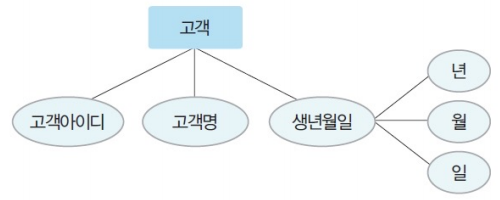
유도 속성(Derived Attribute)¶
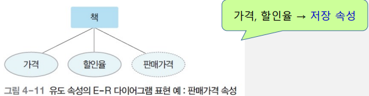
- 기존의 다른 속성 값에서 유도되어 결정된 속성
- 값이 별도로 저장 X
- E-R 다이어그램에서 점선 타원 표현
| 예시 |
|---|
| 책 개체의 가격과 할인율 속성으로 계산되는 판매가격 속성 |
| 고객 개체의 출생연도 속성으로 계산되는 나이 속성 |
널 속성(NULL Attribute)¶
- 널(NULL) 값이 허용되는 속성
널(NULL) 값¶
- 아직 결정되지 않은 값
- 모르는 값
- 존재하지 않는 값
- 공백이나 0과는 상이
| 예시 |
|---|
| 등급 속성이 널(NULL) 값 -> 등급 미결정 |
키 속성(Key Attribute)¶
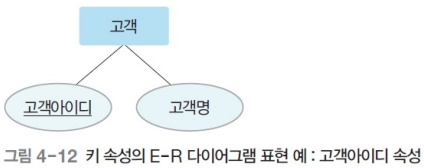
- 각 개체 인스턴스 식별 시 사용되는 속성
- 모든 개체 인스턴스의 키 속성 값은 상이
- 둘 이상의 속성들로도 구성
- E-R 다이어그램에서 밑줄 표현
| 예시 |
|---|
| 고객 개체의 고객아이디 속성 |
관계(Relationship)¶
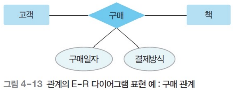
- 개체와 개체가 맺는 의미 있는 연관성
- 개체 집합들 사이의 대응 관계, 매핑(mapping)
- E-R 다이어그램에서 마름모 표현
| 예시 |
|---|
| 고객 개체와 책 개체 간의 구매 관계 : "고객은 책을 구매한다" |
관계 유형 : 관계 참여 개체 타입 수 기준¶
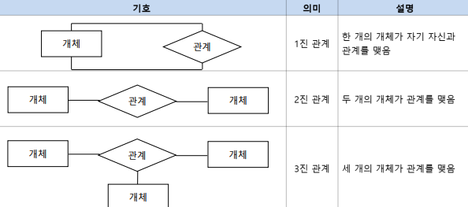
| 관계 유형 | 설명 |
|---|---|
| 이항 관계 | 개체 타입 두 개가 맺는 관계 |
| 삼항 관계 | 개체 타입 세 개가 맺는 관계 |
| 순환 관계 | 개체 타입 하나가 자기 자신과 맺는 관계 |
관계 대응 수(Cardinality)¶
- 두 개체 타입 관계에 실제로 참여하는 개별 개체 수
| 타입 유형 | 설명 |
|---|---|
| 일대일 관계 | 하나의 개체가 하나의 개체에 대응 |
| 일대다 관계 | 하나의 개체가 다수의 개체에 대응 |
| 다대일 관계 | 다수의 개체가 하나의 개체에 대응 |
| 다대다 관계 | 다수의 개체가 다수의 개체에 대응 |
관계 유형 : 매핑 카디널리티 기준¶
일대일(1 : 1) 관계¶
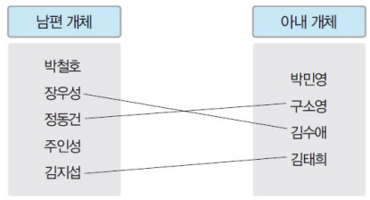
- 개체 A의 각 개체 인스턴스가 개체 B의 개체 인스턴스 하나와 관계 가능
- 개체 B의 각 개체 인스턴스가 개체 A의 개체 인스턴스 하나와 관계 가능
일대다(1 : N) 관계¶
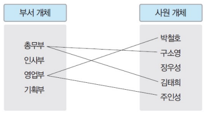
- 개체 A의 각 개체 인스턴스가 개체 B의 개체 인스턴스 다수와 관계 가능
- 개체 B의 각 개체 인스턴스가 개체 A의 개체 인스턴스 하나와 관계 가능
다대다(N : M) 관계¶
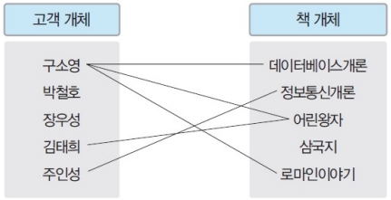
- 개체 A의 각 개체 인스턴스가 개체 B의 개체 인스턴스 다수와 관계 가능
- 개체 B의 각 개체 인스턴스가 개체 A의 개체 인스턴스 다수와 관계 가능
매핑 카디널리티(Mapping Cardinality)¶
- 관계를 맺는 두 개체 집합에서 각 개체 인스턴스가 연관성을 맺는 상대 개체 집합의 인스턴스 개수
관계 참여 특성¶
| 종류 | 설명 | 예시 | ERD |
|---|---|---|---|
| 필수적(전체) 참여 | 모든 개체 인스턴스가 반드시 참여 | 고객 개체가 책 개체와의 구매 관계에 필수적 참여 : 모든 고객은 책을 반드시 구매 | 이중선 |
| 선택적(부분) 참여 | 개체 인스턴스 중 일부만 관계에 참여 가능 | 책 개체가 고객 개체와의 구매 관계에 선택적 참여 : 고객에 구매하지 않은 책 존재 | 단일선 |
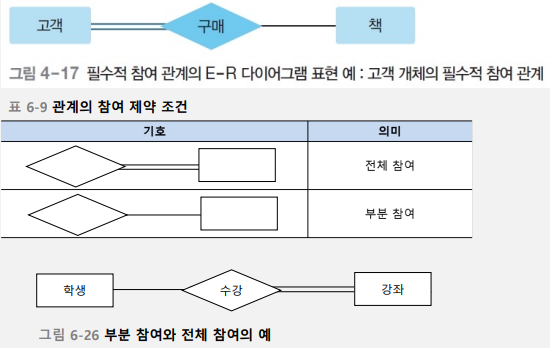
관계 종속성¶
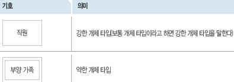
| 종류 | 영문 | 설명 |
|---|---|---|
| 강한 개체 | Strong Entity | 다른 개체의 존재 여부를 결정하는 개체 |
| 약한 개체 | Weak Entity | 다른 개체의 존재 여부에 의존적인 개체 |
- 특징
- 강한 개체와 일반 개체는 대부분 일대다의 관계
- 약한 개체는 강한 개체와의 관계에 필수적 참여
- 약한 개체는 강한 개체의 키를 포함하여 키 구성
- ERD에서 약한 개체는 이중 사각형 표현
- 약한 개체가 강한 개체와 맺는 관계는 이중 마름모 표현
관계 종속성 예시¶
- 직원 개체와 부양가족 개체 사이의 부양 관계
- 직원 개체 : 강한 개체
- 부양가족 개체 : 약한 개체
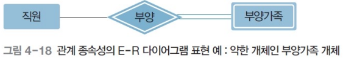
E-R 다이어그램¶
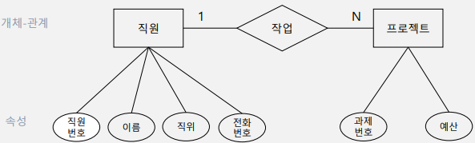
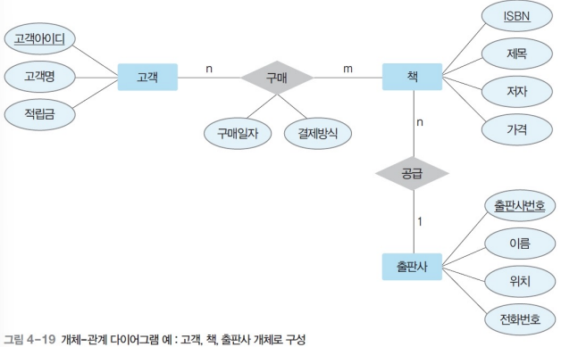
| 요소 | 설명 |
|---|---|
| 사각형 | 개체 |
| 마름모 | 관계 |
| 타원 | 속성 |
| 링크(연결선) | 각 요소 연결 |
| 레이블 | 일대일, 일대다, 다대다 관계 |
IE 표기법¶
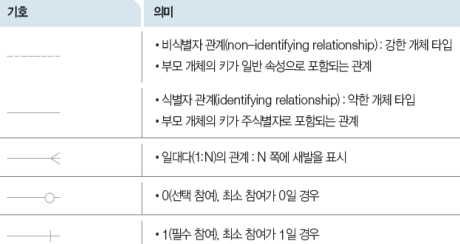
IE 표기법 관계¶
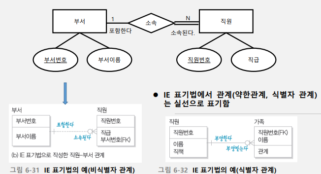
4절. 논리적 데이터 모델¶
논리적 데이터 모델 개념¶
- ERD로 표현된 개념적 구조를 데이터베이스에 저장할 형태로 표현한 논리적 구조
- 데이터베이스의 논리적 구조 == 데이터베이스 스키마(Schema)
- 사용자가 생각하는 데이터베이스의 모습 또는 구조
- 관계 데이터 모델, 계층 데이터 모델, 네트워크 데이터 모델 등
관계 데이터 모델(Relational Data Model)¶
- 일반적으로 많이 사용되는 논리적 데이터 모델
- 데이터베이스의 논리적 구조가 2차원 테이블 형태
계층 데이터 모델(Hierarchical Data Model)¶
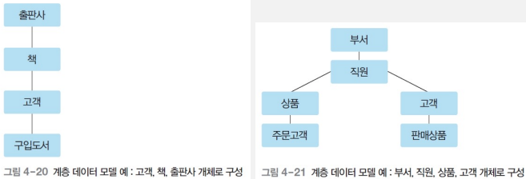
- 데이터베이스의 논리적 구조 : 트리(tree) 형태
- 루트 역할을 하는 개체가 존재하고 사이클은 미존재
- 개체 간 상하 관계 성립 : 일대다(1 : N) 관계만 허용
- 부모 개체
- 자식 개체
- 두 개체 사이 하나의 관계만 정의 가능
- 다대다(n:m) 관계 직접 표현 불가
- 구조가 복잡하며 데이터 삽입·삭제·수정·검색이 어려움
네트워크 데이터 모델(Network Data Model)¶
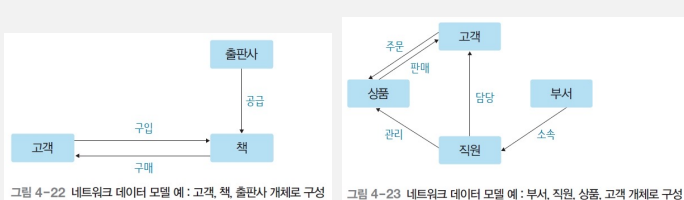
- 데이터베이스의 논리적 구조 : 네트워크, 그래프 형태
- 개체 간 관계 : 일대다(1:n) 관계만 허용
- 오너(owner)
- 멤버(member)
- 두 개체 사이 여러 관계를 정의하여 이름으로 구별
- 다대다(n:m) 관계 직접 표현 불가
- 구조가 복잡하며 데이터 삽입·삭제·수정·검색이 어려움